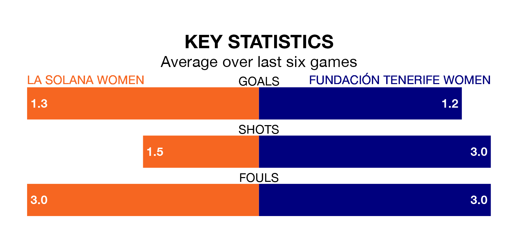

La Solana Women host Fundación Tenerife Women on Saturday in the Segunda Federación Femenina.
In their last league match, on Sunday, La Solana beat Elche Women 2-1 away, with their goal scored by (two).
Fundación Tenerife also won, 3-2 at home against Córdoba Women, with (three) scoring their goals.
La Solana are zero in the table after 29 games, of which they have won six and drawn seven, earning 25 points.
Fundación Tenerife are seven places behind la Solana in seventh, with 15 wins and six draws putting them on 51 points.
With 22 goals in 29 games so far this season, the home side are the league's-14th-lowest scorers with 0.8 goals per game. And they are conceding at an average rate, letting in 38 goals at a rate of 1.3 per game.
The visitors, meanwhile, are above average scorers, with 1.4 goals per game, compared to a league average of 1.3. They have conceded 1.0 goal per game.
La Solana are in mixed form in the Segunda Federación Femenina, with two wins and two draws from their last six games.
With a win and two draws over that period, Fundación Tenerife's form is worse – they have taken five points from 18, compared to La Solana's eight.
Updated: 10:44 (UTC), 30/04/24